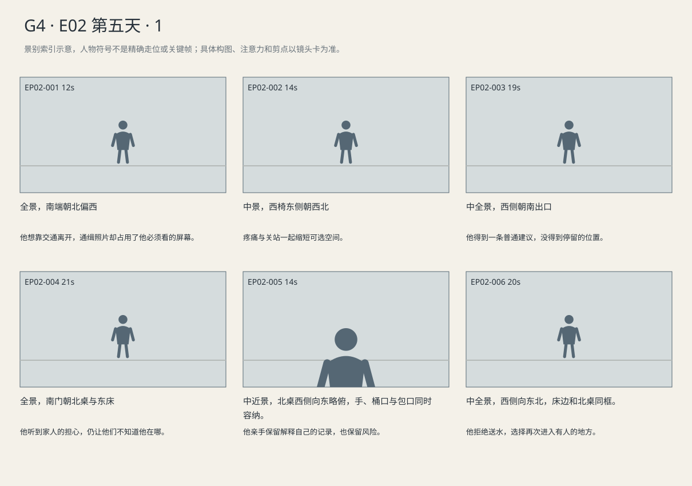
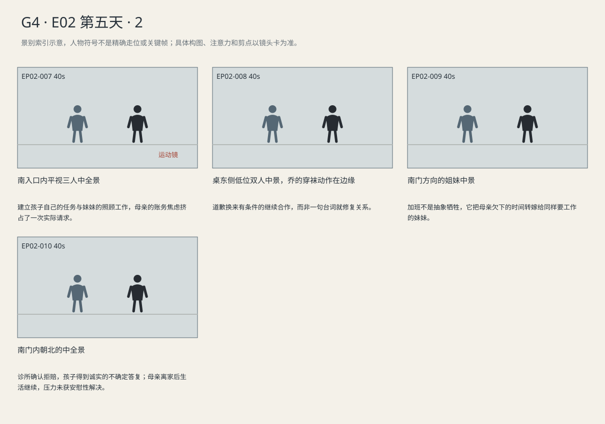

青年选择留下笔记、不给家人回信；玛拉必须承认疗程未定，并给妹妹具体回电期限才能出门。
剧本Markdown · 全部独立复制稿 · 英语字幕 · 中文字幕
详细剧本
E03-SC01 · 夜·案发后第五天前夜 · STATION
候车厅南入口漏进冷风，东侧售票柜台将关灯，西侧候车椅零散坐人，北端是发车门。路易吉穿深炭灰夹克，戴浅蓝医用口罩，黑背包双肩背着。他站在西边长椅旁，先看北端公布的屏幕，再看手里的车票。
北端发车牌突然切成通缉照片。路易吉脚步没停，把车票翻到背面。
车站广播声（英语）：Last connection delayed. Please check the departure board.
中文对照：末班接驳延误，请查看发车牌。
他原想向北走，却在西长椅尽头停住；旁边旅客只顾拖箱子赶自己的班次。
他在西椅刚坐下又站起，扶椅背换重心。工作人员来拉隔离带，他抬手挡住即将封闭的空位。
路易吉（英语）：Anywhere still open? I just need somewhere to sit. I'm waiting for—
中文对照：还有哪儿开着？能坐一会儿就行。我在等——
工作人员看见他的票，再看已关掉一半的大厅灯。
车站工作人员（英语）：Try your hotel. There are a few places down the road. Don't know what's open.
中文对照：问问你住的旅馆吧。那头有几家吃饭的，哪家开着就不知道了。
工作人员等他离开，隔离带没有收回去。路易吉把票塞进左袋，整好背包肩带，走向南门；南门被拖箱旅客拉开又回弹。他把背包带让开门边，等旅客先通过，才顶住门出去。风灌进来，工作人员等门外身影走开才扣隔离带。
E03-SC02 · 清晨06:30·第五天·听昨夜留下的家人语音 · HOTEL-ROOM
临时旅馆房，南门反锁，床在东，西窗透街灯冷光，北桌亮着暖台灯。路易吉仍戴浅蓝口罩，坐东床边；黑包放在北桌旁，手机亮着未接来电，旁边的小垃圾桶套着白袋。
手机在北桌亮起，路易吉从东床边撑起身走去。母亲的留言播出。
母亲语音留言（英语）：Just tell me you're somewhere warm. You don't have to explain. Your sister's still up.
中文对照：就告诉我你待的地方暖不暖。不用解释。你姐姐也还没睡。
他把音量按小，却没有按停，等末尾呼吸声过去，打开回复框写下“I’m warm.”。他看着发送键，最后逐字删掉，才放下手机。
他抽出笔记，朝白袋垃圾桶放下。纸角碰到袋口，拇指却挡住封面的字迹。门外脚步靠近又离开。他把本子提回，压进黑包最里面；拉链卡了一次，他重新拉到底。
他拿起响着的手机，扶床沿坐回去。
旅馆前台电话声（英语）：Kitchen's closed. I can bring you some water.
中文对照：厨房关了。要不我给你送点水？
路易吉（英语）：No. I'll go out.
中文对照：不用。我出去。
通话结束，他撑床起身，取北桌房卡收入左袋，将手机暂放桌上腾手背起黑包。走到南门，他回头看到手机已暗，返一步拿回右手，才开门出去。
E03-SC03 · 清早06:45·第五天·诊所早班回电 · MARA-HOME
清早六点四十五分，玛拉公寓南入口靠着鞋架，厨房在东，中央餐桌上摊着拒赔通知，西窗尚暗，北侧孩子卧室留着门缝。东厨房现有小灯开着，暖光落到餐桌和鞋架近处。玛拉穿黑polo工服、灰围裙，把蓝文件夹放在左臂下；妹妹乔穿深紫针织衫坐桌南侧，艾莉抱画本从北门出来。
玛拉把拒赔页折回蓝夹，正要绕过餐桌。艾莉横过来，把还没接上的桥举到她面前。
艾莉（英语）：You said you weren't working. We haven't done the bridge. Jo made the river go uphill.
中文对照：你说今天不上班的。桥还没画呢。乔姨把河都画到山上去了。
乔将一只袜子套上孩子脚尖；艾莉把脚缩回，点她画错的河。
乔（英语）：You asked for a waterfall. That's the waterfall.
中文对照：你要瀑布啊。这就是瀑布。
艾莉（英语）：It goes the other way. See? That's our house.
中文对照：流反了。你看，这是咱们家。
手机排班确认震动。玛拉看一眼，先把手机与蓝夹放桌南角，回鞋架拉鞋带。
乔（英语）：Mara. She was showing you something.
中文对照：玛拉。她在给你看呢。
玛拉回过头，却只看见艾莉还光着的一只脚。
玛拉（英语）：Put your socks on. Please. Just do that for me.
中文对照：把袜子穿上。行吗？这点事别让我操心。
艾莉不再举画，开始卷起来。玛拉的鞋带打歪了，她扯开，走近孩子蹲下。
玛拉（英语）：I'm sorry. Save me the bridge, okay? We'll do it together.
中文对照：对不起。桥给我留着，好吗？咱俩一起画。
艾莉把地图的桥那一面转向自己，只把脚给乔。
艾莉（英语）：When? You said that yesterday.
中文对照：什么时候？你昨天也这么说。
玛拉（英语）：After my shift. If you're still up for it.
中文对照：等我下班。你还想画的话。
艾莉（英语）：Don't put a road through it.
中文对照：别在这儿画条公路。
她把桥留白的部分摊到桌上，留出母亲可以回来坐的一侧；自己先去找绿笔。
玛拉站起穿外套，乔没有把她的文件一起递过去。
乔（英语）：I have to leave at noon. Don't sign up for another shift.
中文对照：我中午得走。你别又加一班。
玛拉（英语）：It covers Friday's deposit. That's all I'm doing.
中文对照：这班够交周五的预付款了。我就上这一班。
乔把外套另一只袖口拉平，挡着她往门口走的半步。
乔（英语）：I have work, too. I can't call out again.
中文对照：我也得上班。不能又临时请假。
玛拉（英语）：I'll ask to leave early. I'll call before I leave.
中文对照：我去说一声，早点走。走之前给你打电话。
乔（英语）：Before noon. Not from the bus.
中文对照：中午之前。别都上公交车了才打。
玛拉点头，拿回手机和蓝夹。来电打断她抓门把的动作。
医生电话声（英语）：I've still got her down for Friday. Call billing when you get off. The renewal's still denied.
中文对照：周五还给她留着。下班打给账务。续批还是没过。
玛拉（英语）：I'll call at noon. Can you put that in the notes?
中文对照：我中午打。能帮我在记录里写上吗？
她挂断，把手机放进右裤袋。艾莉听见周五，把绿笔放下。
艾莉（英语）：Are we still going on Friday?
中文对照：周五还去吗？
玛拉（英语）：That's what I'm trying to sort out.
中文对照：我就是在弄这个。
玛拉答完孩子，先将蓝夹放在鞋架上，蹲下重系鞋带。乔在她系鞋带时坐到桌旁，接回孩子的画。
乔（英语）：Come on. Show me which way the water goes.
中文对照：来，给我看看水该往哪儿流。
乔说话时，孩子已经给瀑布补上向下箭头。玛拉系好鞋带站起，左臂拿回鞋架上的蓝夹，出南门；地图留在桌上。
景别索引板
简化人物符号仅用于检索景别。完整镜头卡、信息变化及相邻剪点另页阅读。


逐镜复制稿
EP02-001 · 制作号E03-SH001 · 12s · 全景，南端朝北偏西
他想靠交通离开，通缉照片却占用了他必须看的屏幕。
成片采用 [0,12) 秒；1个生成候选，技术边界不是剪点。候选未生成。
16:9横屏，当代美国真人现实悬疑。环境低至中等饱和，人物肤色保持真实差异与自然纹理；深黑保留衣料和道具分离，白纸与白领高光柔和有层次。冷暖来自本镜已有物理光源，不统一青橙、不磨皮、不以整体欠曝制造悬疑。遵循本镜机位、表演与焦点，不擅自追加缓推、急变焦或摇晃。
场次风格：本场时段：夜·案发后第五天前夜。本场夜间/凌晨，空间母稿的门窗位置保持，但其中白天窗光说明不作当前光源；以本场正文已明确的工作灯、台灯或既有公共照明为主，窗外暗部保留环境层次。 本地光色与材质：既有公共照明下保留灰墙、候车座、暗衣服与皮肤的层次；广播和其他旅客属于公共空间，不用独立追光隔离主角。
总生成长度14秒，为中间12秒采用区间保留开头和结尾各1秒自然余量，不增添剧情。
人物：
路易吉，26岁意裔男性，深棕短卷发、浓眉、棕眼、较长椭圆脸、清楚下颌、精瘦体态；深炭灰连帽夹克、黑直筒裤、灰运动鞋。黑布背包为独立道具，按本镜起态与动作确定在脚边、肩上或由警方持有，不能因服装描述自动背回身上。戴浅蓝医用口罩。声音中低、清楚克制。
车站广播，成年女性，清楚中性扩音，由北端广播扬声器传出；广播员不在画内。
环境与光源：候车厅；入口南、售票柜台东、候车座西、发车门北。广播与人员活动独立，路易吉不拥有警方未公布的信息。
景别/机位：全景，南端朝北偏西
构图：西候车椅、东柜台、北门均清楚
起始画面：口罩遮口鼻；包在背；票右手
事件与表演：北端发车牌突然切成通缉照片。路易吉脚步没停，把车票翻到背面。车站广播声对车站旅客说本镜第1句英语对白，普通广播。他原想向北走，却在西长椅尽头停住；旁边旅客只顾拖箱子赶自己的班次。
注意力变化：追捕已经开始，青年还在公共空间。 → 他想靠交通离开，通缉照片却占用了他必须看的屏幕。
摄影机：固定南端向北偏西全景，屏幕后景、青年中景；路人不集体发现他。
焦点：人物与北屏所在空间清楚，屏幕内容后期替换。
结束状态：他在西长椅边停下
声音：<北侧广播、暖气管响、轮箱声>
(无背景音乐)
准确对白按顺序：
车站广播声向车站旅客，普通广播，只使用英语说一次：{Last connection delayed. Please check the departure board.}
只说列出的英语原句；导演说明不发声，不说中文译文，不额外加旁白或对白。手机/公文/字幕均由后期叠加，生成画面不排字。单镜连续，不加入内部切镜；前后保持身份、服装、门窗、物件与接触状态一致。静帧起态备稿
16:9横屏，当代美国真人现实悬疑。环境低至中等饱和，人物肤色保持真实差异与自然纹理；深黑保留衣料和道具分离，白纸与白领高光柔和有层次。冷暖来自本镜已有物理光源，不统一青橙、不磨皮、不以整体欠曝制造悬疑。遵循本镜机位、表演与焦点，不擅自追加缓推、急变焦或摇晃。
场次风格：本场时段：夜·案发后第五天前夜。本场夜间/凌晨，空间母稿的门窗位置保持，但其中白天窗光说明不作当前光源；以本场正文已明确的工作灯、台灯或既有公共照明为主，窗外暗部保留环境层次。 本地光色与材质：既有公共照明下保留灰墙、候车座、暗衣服与皮肤的层次；广播和其他旅客属于公共空间，不用独立追光隔离主角。
路易吉，26岁意裔男性，深棕短卷发、浓眉、棕眼、较长椭圆脸、清楚下颌、精瘦体态；深炭灰连帽夹克、黑直筒裤、灰运动鞋。黑布背包为独立道具，按本镜起态与动作确定在脚边、肩上或由警方持有，不能因服装描述自动背回身上。戴浅蓝医用口罩。声音中低、清楚克制。
候车厅；入口南、售票柜台东、候车座西、发车门北。广播与人员活动独立，路易吉不拥有警方未公布的信息。
全景，南端朝北偏西；起态构图：口罩遮口鼻；包在背；票右手。空间方位按上列环境，人物只处于起态；本镜后续调度不出现在静帧。此图不描画尚未发生的动作，不生成字幕和公文长字。
| 英语原句 | 中文对照 | 预定窗口 |
|---|
| 车站广播声：Last connection delayed. Please check the departure board. | 末班接驳延误，请查看发车牌。 | 0.6–4.76s |
观众信息：追捕已经开始，青年还在公共空间。 → 他想靠交通离开，通缉照片却占用了他必须看的屏幕。
切点：车票被翻了面，他停在长椅边。
接口：同场近些看疼痛与询问
EP02-002 · 制作号E03-SH002 · 14s · 中景，西椅东侧朝西北
疼痛与关站一起缩短可选空间。
成片采用 [12,26) 秒；1个生成候选，技术边界不是剪点。候选未生成。
16:9横屏，当代美国真人现实悬疑。环境低至中等饱和，人物肤色保持真实差异与自然纹理；深黑保留衣料和道具分离，白纸与白领高光柔和有层次。冷暖来自本镜已有物理光源，不统一青橙、不磨皮、不以整体欠曝制造悬疑。遵循本镜机位、表演与焦点，不擅自追加缓推、急变焦或摇晃。
场次风格：本场时段：夜·案发后第五天前夜。本场夜间/凌晨，空间母稿的门窗位置保持，但其中白天窗光说明不作当前光源；以本场正文已明确的工作灯、台灯或既有公共照明为主，窗外暗部保留环境层次。 本地光色与材质：既有公共照明下保留灰墙、候车座、暗衣服与皮肤的层次；广播和其他旅客属于公共空间，不用独立追光隔离主角。
总生成长度16秒，为中间14秒采用区间保留开头和结尾各1秒自然余量，不增添剧情。
人物：
路易吉，26岁意裔男性，深棕短卷发、浓眉、棕眼、较长椭圆脸、清楚下颌、精瘦体态；深炭灰连帽夹克、黑直筒裤、灰运动鞋。黑布背包为独立道具，按本镜起态与动作确定在脚边、肩上或由警方持有，不能因服装描述自动背回身上。戴浅蓝医用口罩。声音中低、清楚克制。
车站工作人员，50岁拉美裔男性，短灰黑发、灰制服、腰侧钥匙串，普通男中音，在本镜给定出口处工作。
环境与光源：候车厅；入口南、售票柜台东、候车座西、发车门北。广播与人员活动独立，路易吉不拥有警方未公布的信息。
景别/机位：中景，西椅东侧朝西北
构图：椅背前景，路易吉与工作人员同层
起始画面：青年站西椅旁，将试着坐下，右手车票，口罩与背包在身。
事件与表演：他在西椅刚坐下又站起，扶椅背换重心。工作人员来拉隔离带，他抬手挡住即将封闭的空位。路易吉对车站工作人员说本镜第1句英语对白，想给正常理由，说到一半放弃。工作人员看见他的票，再看已关掉一半的大厅灯。
注意力变化：通缉照片里的人试图在椅子上停留。 → 疼痛与关站一起缩短可选空间。
摄影机：固定长椅东侧中景，椅背、支撑手、工作人员同框。
焦点：支撑与挡带动作同层可见。
结束状态：青年椅边站着，右手票，工作人员隔离带在手。
声音：<衣料、工作人员钥匙串、远广播>
(无背景音乐)
准确对白按顺序：
路易吉向车站工作人员，想给正常理由，说到一半放弃，只使用英语说一次：{Anywhere still open? I just need somewhere to sit. I'm waiting for—}
只说列出的英语原句；导演说明不发声，不说中文译文，不额外加旁白或对白。手机/公文/字幕均由后期叠加，生成画面不排字。单镜连续，不加入内部切镜；前后保持身份、服装、门窗、物件与接触状态一致。静帧起态备稿
16:9横屏，当代美国真人现实悬疑。环境低至中等饱和，人物肤色保持真实差异与自然纹理；深黑保留衣料和道具分离，白纸与白领高光柔和有层次。冷暖来自本镜已有物理光源，不统一青橙、不磨皮、不以整体欠曝制造悬疑。遵循本镜机位、表演与焦点，不擅自追加缓推、急变焦或摇晃。
场次风格：本场时段：夜·案发后第五天前夜。本场夜间/凌晨，空间母稿的门窗位置保持，但其中白天窗光说明不作当前光源；以本场正文已明确的工作灯、台灯或既有公共照明为主，窗外暗部保留环境层次。 本地光色与材质：既有公共照明下保留灰墙、候车座、暗衣服与皮肤的层次；广播和其他旅客属于公共空间，不用独立追光隔离主角。
路易吉，26岁意裔男性，深棕短卷发、浓眉、棕眼、较长椭圆脸、清楚下颌、精瘦体态；深炭灰连帽夹克、黑直筒裤、灰运动鞋。黑布背包为独立道具，按本镜起态与动作确定在脚边、肩上或由警方持有，不能因服装描述自动背回身上。戴浅蓝医用口罩。声音中低、清楚克制。
车站工作人员，50岁拉美裔男性，短灰黑发、灰制服、腰侧钥匙串，普通男中音，在本镜给定出口处工作。
候车厅；入口南、售票柜台东、候车座西、发车门北。广播与人员活动独立，路易吉不拥有警方未公布的信息。
中景，西椅东侧朝西北；起态构图：青年站西椅旁，将试着坐下，右手车票，口罩与背包在身。。空间方位按上列环境，人物只处于起态；本镜后续调度不出现在静帧。此图不描画尚未发生的动作，不生成字幕和公文长字。
| 英语原句 | 中文对照 | 预定窗口 |
|---|
| 路易吉：Anywhere still open? I just need somewhere to sit. I'm waiting for— | 还有哪儿开着？能坐一会儿就行。我在等—— | 0.6–6.66s |
观众信息：通缉照片里的人试图在椅子上停留。 → 疼痛与关站一起缩短可选空间。
切点：工作人员握隔离带，示意南门外。
接口：接方向回应，不提供逃避路线
EP02-003 · 制作号E03-SH003 · 19s · 中全景，西侧朝南出口
他得到一条普通建议，没得到停留的位置。
成片采用 [26,45) 秒；1个生成候选，技术边界不是剪点。候选未生成。
16:9横屏，当代美国真人现实悬疑。环境低至中等饱和，人物肤色保持真实差异与自然纹理；深黑保留衣料和道具分离，白纸与白领高光柔和有层次。冷暖来自本镜已有物理光源，不统一青橙、不磨皮、不以整体欠曝制造悬疑。遵循本镜机位、表演与焦点，不擅自追加缓推、急变焦或摇晃。
场次风格：本场时段：夜·案发后第五天前夜。本场夜间/凌晨，空间母稿的门窗位置保持，但其中白天窗光说明不作当前光源；以本场正文已明确的工作灯、台灯或既有公共照明为主，窗外暗部保留环境层次。 本地光色与材质：既有公共照明下保留灰墙、候车座、暗衣服与皮肤的层次；广播和其他旅客属于公共空间，不用独立追光隔离主角。
总生成长度21秒，为中间19秒采用区间保留开头和结尾各1秒自然余量，不增添剧情。
人物：
路易吉，26岁意裔男性，深棕短卷发、浓眉、棕眼、较长椭圆脸、清楚下颌、精瘦体态；深炭灰连帽夹克、黑直筒裤、灰运动鞋。黑布背包为独立道具，按本镜起态与动作确定在脚边、肩上或由警方持有，不能因服装描述自动背回身上。戴浅蓝医用口罩。声音中低、清楚克制。
车站工作人员，50岁拉美裔男性，短灰黑发、灰制服、腰侧钥匙串，普通男中音，在本镜给定出口处工作。
环境与光源：候车厅；入口南、售票柜台东、候车座西、发车门北。广播与人员活动独立，路易吉不拥有警方未公布的信息。
景别/机位：中全景，西侧朝南出口
构图：南玻璃门、外街灯，工作人员在东缘
起始画面：青年仍在椅旁，票在右手
事件与表演：车站工作人员对路易吉说本镜第1句英语对白，想结束班次，只说普通建议。工作人员等他离开，隔离带没有收回去。路易吉把票塞进左袋，整好背包肩带，走向南门；风灌进来，带子在他身后扣上。 南门被拖箱旅客拉开又回弹；他把背包带让开门边，等旅客先通过，才顶住门出去。工作人员等门外身影走开才扣隔离带。
注意力变化：青年需要坐，工作人员要关站。 → 他得到一条普通建议，没得到停留的位置。
摄影机：固定西侧向南中全景，两人的离开与封区分别完成，不跟出门展示路线。
焦点：保持门与隔离带闭合关系。
结束状态：青年从南门走出，隔离带在厅内扣上；没有新的逃亡路线信息。
声音：<门铰与冷风，广播留在门后>
(无背景音乐)
准确对白按顺序：
车站工作人员向路易吉，想结束班次，只说普通建议，只使用英语说一次：{Try your hotel. There are a few places down the road. Don't know what's open.}
只说列出的英语原句；导演说明不发声，不说中文译文，不额外加旁白或对白。手机/公文/字幕均由后期叠加，生成画面不排字。单镜连续，不加入内部切镜；前后保持身份、服装、门窗、物件与接触状态一致。静帧起态备稿
16:9横屏，当代美国真人现实悬疑。环境低至中等饱和，人物肤色保持真实差异与自然纹理；深黑保留衣料和道具分离，白纸与白领高光柔和有层次。冷暖来自本镜已有物理光源，不统一青橙、不磨皮、不以整体欠曝制造悬疑。遵循本镜机位、表演与焦点，不擅自追加缓推、急变焦或摇晃。
场次风格：本场时段：夜·案发后第五天前夜。本场夜间/凌晨，空间母稿的门窗位置保持，但其中白天窗光说明不作当前光源；以本场正文已明确的工作灯、台灯或既有公共照明为主，窗外暗部保留环境层次。 本地光色与材质：既有公共照明下保留灰墙、候车座、暗衣服与皮肤的层次；广播和其他旅客属于公共空间，不用独立追光隔离主角。
路易吉，26岁意裔男性，深棕短卷发、浓眉、棕眼、较长椭圆脸、清楚下颌、精瘦体态；深炭灰连帽夹克、黑直筒裤、灰运动鞋。黑布背包为独立道具，按本镜起态与动作确定在脚边、肩上或由警方持有，不能因服装描述自动背回身上。戴浅蓝医用口罩。声音中低、清楚克制。
车站工作人员，50岁拉美裔男性，短灰黑发、灰制服、腰侧钥匙串，普通男中音，在本镜给定出口处工作。
候车厅；入口南、售票柜台东、候车座西、发车门北。广播与人员活动独立，路易吉不拥有警方未公布的信息。
中全景，西侧朝南出口；起态构图：青年仍在椅旁，票在右手。空间方位按上列环境，人物只处于起态；本镜后续调度不出现在静帧。此图不描画尚未发生的动作，不生成字幕和公文长字。
| 英语原句 | 中文对照 | 预定窗口 |
|---|
| 车站工作人员：Try your hotel. There are a few places down the road. Don't know what's open. | 问问你住的旅馆吧。那头有几家吃饭的，哪家开着就不知道了。 | 0.6–8.09s |
观众信息：青年需要坐，工作人员要关站。 → 他得到一条普通建议，没得到停留的位置。
切点：隔离带扣上，南门合拢。
接口：本场结果成立后切入 E03-SC02（HOTEL-ROOM，清晨06:30·第五天·听昨夜留下的家人语音）；以新场开头建立空间和人物持物，环境声按新场接入。
EP02-004 · 制作号E03-SH004 · 21s · 全景，南门朝北桌与东床
他听到家人的担心，仍让他们不知道他在哪。
成片采用 [45,66) 秒；1个生成候选，技术边界不是剪点。候选未生成。
16:9横屏，当代美国真人现实悬疑。环境低至中等饱和，人物肤色保持真实差异与自然纹理；深黑保留衣料和道具分离，白纸与白领高光柔和有层次。冷暖来自本镜已有物理光源，不统一青橙、不磨皮、不以整体欠曝制造悬疑。遵循本镜机位、表演与焦点，不擅自追加缓推、急变焦或摇晃。
场次风格：本场时段：清晨06:30·第五天·听昨夜留下的家人语音。本场夜间/凌晨，空间母稿的门窗位置保持，但其中白天窗光说明不作当前光源；以本场正文已明确的工作灯、台灯或既有公共照明为主，窗外暗部保留环境层次。 本地光色与材质：西窗白天受天光、夜间保留正文明确的少量街灯冷光，北桌既有暖台灯按本场时段启用；廉价织物、墙面与黑包各自可读，暖光只影响邻近区域，不在东床新增灯具。
总生成长度23秒，为中间21秒采用区间保留开头和结尾各1秒自然余量，不增添剧情。
人物：
路易吉，26岁意裔男性，深棕短卷发、浓眉、棕眼、较长椭圆脸、清楚下颌、精瘦体态；深炭灰连帽夹克、黑直筒裤、灰运动鞋。黑布背包为独立道具，按本镜起态与动作确定在脚边、肩上或由警方持有，不能因服装描述自动背回身上。戴浅蓝医用口罩。声音中低、清楚克制。
路易吉母亲，55岁女性，熟悉温暖但担心的中低音，手机留言声，无哭诉，不在本镜画内。
环境与光源：临时旅馆房；门南、床东、窗西、桌北。西窗透少量街灯冷光，北桌既有暖台灯亮着；不启用白昼天光；电话/笔记从可见位置取放，不另加东床灯。
景别/机位：全景，南门朝北桌与东床
构图：北手机、东床、西窗明确
起始画面：口罩仍戴着；他坐床边
事件与表演：手机在北桌亮起，路易吉从东床边撑起身走去。母亲的留言播出。母亲语音留言对路易吉说本镜第1句英语对白，不追问，留一个能回答的小要求。他把音量按小，却没有按停，等末尾呼吸声过去才放下手机。 留言结束，他打开回复框写下“I’m warm.”，看着发送键，最后逐字删掉，没有发出。
注意力变化：公共大厅把他赶走，旅馆可以暂时锁门。 → 他听到家人的担心，仍让他们不知道他在哪。
摄影机：固定南门向北桌东床全景，响铃触发移动，身体困境不因留言自动消失。
焦点：随人到桌，手机内容不必可读。
结束状态：留言已听完；回复框空白，手机回北桌，母亲仍无回音。
声音：<手机留言、暖灯轻电流、远街声>
(无背景音乐)
准确对白按顺序：
母亲语音留言向路易吉，不追问，留一个能回答的小要求，只使用英语说一次：{Just tell me you're somewhere warm. You don't have to explain. Your sister's still up.}
只说列出的英语原句；导演说明不发声，不说中文译文，不额外加旁白或对白。手机/公文/字幕均由后期叠加，生成画面不排字。单镜连续，不加入内部切镜；前后保持身份、服装、门窗、物件与接触状态一致。静帧起态备稿
16:9横屏，当代美国真人现实悬疑。环境低至中等饱和，人物肤色保持真实差异与自然纹理；深黑保留衣料和道具分离，白纸与白领高光柔和有层次。冷暖来自本镜已有物理光源，不统一青橙、不磨皮、不以整体欠曝制造悬疑。遵循本镜机位、表演与焦点，不擅自追加缓推、急变焦或摇晃。
场次风格：本场时段：清晨06:30·第五天·听昨夜留下的家人语音。本场夜间/凌晨，空间母稿的门窗位置保持，但其中白天窗光说明不作当前光源；以本场正文已明确的工作灯、台灯或既有公共照明为主，窗外暗部保留环境层次。 本地光色与材质：西窗白天受天光、夜间保留正文明确的少量街灯冷光，北桌既有暖台灯按本场时段启用；廉价织物、墙面与黑包各自可读，暖光只影响邻近区域，不在东床新增灯具。
路易吉，26岁意裔男性，深棕短卷发、浓眉、棕眼、较长椭圆脸、清楚下颌、精瘦体态；深炭灰连帽夹克、黑直筒裤、灰运动鞋。黑布背包为独立道具，按本镜起态与动作确定在脚边、肩上或由警方持有，不能因服装描述自动背回身上。戴浅蓝医用口罩。声音中低、清楚克制。
临时旅馆房；门南、床东、窗西、桌北。西窗透少量街灯冷光，北桌既有暖台灯亮着；不启用白昼天光；电话/笔记从可见位置取放，不另加东床灯。
全景，南门朝北桌与东床；起态构图：口罩仍戴着；他坐床边。空间方位按上列环境，人物只处于起态；本镜后续调度不出现在静帧。此图不描画尚未发生的动作，不生成字幕和公文长字。
| 英语原句 | 中文对照 | 预定窗口 |
|---|
| 母亲语音留言：Just tell me you're somewhere warm. You don't have to explain. Your sister's still up. | 就告诉我你待的地方暖不暖。不用解释。你姐姐也还没睡。 | 0.6–8.09s |
观众信息：公共大厅把他赶走，旅馆可以暂时锁门。 → 他听到家人的担心，仍让他们不知道他在哪。
切点：手机放下，手转向背包里的笔记。
接口：接笔记与垃圾桶的选择
EP02-005 · 制作号E03-SH005 · 14s · 中近景，北桌西侧向东略俯，手、桶口与包口同时容纳。
他亲手保留解释自己的记录，也保留风险。
成片采用 [66,80) 秒；1个生成候选，技术边界不是剪点。候选未生成。
16:9横屏，当代美国真人现实悬疑。环境低至中等饱和，人物肤色保持真实差异与自然纹理；深黑保留衣料和道具分离，白纸与白领高光柔和有层次。冷暖来自本镜已有物理光源，不统一青橙、不磨皮、不以整体欠曝制造悬疑。遵循本镜机位、表演与焦点，不擅自追加缓推、急变焦或摇晃。
场次风格：本场时段：清晨06:30·第五天·听昨夜留下的家人语音。本场夜间/凌晨，空间母稿的门窗位置保持，但其中白天窗光说明不作当前光源；以本场正文已明确的工作灯、台灯或既有公共照明为主，窗外暗部保留环境层次。 本地光色与材质：西窗白天受天光、夜间保留正文明确的少量街灯冷光，北桌既有暖台灯按本场时段启用；廉价织物、墙面与黑包各自可读，暖光只影响邻近区域，不在东床新增灯具。
总生成长度16秒，为中间14秒采用区间保留开头和结尾各1秒自然余量，不增添剧情。
人物：
路易吉，26岁意裔男性，深棕短卷发、浓眉、棕眼、较长椭圆脸、清楚下颌、精瘦体态；深炭灰连帽夹克、黑直筒裤、灰运动鞋。黑布背包为独立道具，按本镜起态与动作确定在脚边、肩上或由警方持有，不能因服装描述自动背回身上。戴浅蓝医用口罩。声音中低、清楚克制。
环境与光源：临时旅馆房；门南、床东、窗西、桌北。西窗透少量街灯冷光，北桌既有暖台灯亮着；不启用白昼天光；电话/笔记从可见位置取放，不另加东床灯。
景别/机位：中近景，北桌西侧向东略俯，手、桶口与包口同时容纳。
构图：桶口白袋在下前景，双手和笔记中景，北桌手机后景；戴口罩的脸上沿。
起始画面：手机北桌，左手抽笔记，右手扶包口。
事件与表演：他抽出笔记，朝白袋垃圾桶放下。纸角碰到袋口，拇指却挡住封面的字迹。门外脚步靠近又离开。他把本子提回，压进黑包最里面；拉链卡了一次，他重新拉到底。
注意力变化：笔记可以丢掉，可能减少被捕后的风险。 → 他亲手保留解释自己的记录，也保留风险。
摄影机：固定北桌西侧中近景，同时见手、桶口、包口三个相邻接触点。
焦点：三个接触点同在可读范围，无切焦。
结束状态：笔记进包拉链合上，手机北桌，口罩戴着。
声音：<纸擦塑料、门外脚步、拉链>
(无背景音乐)
准确对白按顺序：
无对白。
只说列出的英语原句；导演说明不发声，不说中文译文，不额外加旁白或对白。手机/公文/字幕均由后期叠加，生成画面不排字。单镜连续，不加入内部切镜；前后保持身份、服装、门窗、物件与接触状态一致。
静帧起态备稿
16:9横屏，当代美国真人现实悬疑。环境低至中等饱和，人物肤色保持真实差异与自然纹理；深黑保留衣料和道具分离，白纸与白领高光柔和有层次。冷暖来自本镜已有物理光源，不统一青橙、不磨皮、不以整体欠曝制造悬疑。遵循本镜机位、表演与焦点，不擅自追加缓推、急变焦或摇晃。
场次风格：本场时段：清晨06:30·第五天·听昨夜留下的家人语音。本场夜间/凌晨，空间母稿的门窗位置保持，但其中白天窗光说明不作当前光源；以本场正文已明确的工作灯、台灯或既有公共照明为主，窗外暗部保留环境层次。 本地光色与材质：西窗白天受天光、夜间保留正文明确的少量街灯冷光，北桌既有暖台灯按本场时段启用；廉价织物、墙面与黑包各自可读，暖光只影响邻近区域，不在东床新增灯具。
路易吉，26岁意裔男性，深棕短卷发、浓眉、棕眼、较长椭圆脸、清楚下颌、精瘦体态；深炭灰连帽夹克、黑直筒裤、灰运动鞋。黑布背包为独立道具，按本镜起态与动作确定在脚边、肩上或由警方持有，不能因服装描述自动背回身上。戴浅蓝医用口罩。声音中低、清楚克制。
临时旅馆房；门南、床东、窗西、桌北。西窗透少量街灯冷光，北桌既有暖台灯亮着；不启用白昼天光；电话/笔记从可见位置取放，不另加东床灯。
中近景，北桌西侧向东略俯，手、桶口与包口同时容纳。；起态构图：手机北桌，左手抽笔记，右手扶包口。。空间方位按上列环境，人物只处于起态；本镜后续调度不出现在静帧。此图不描画尚未发生的动作，不生成字幕和公文长字。
观众信息：笔记可以丢掉，可能减少被捕后的风险。 → 他亲手保留解释自己的记录，也保留风险。
切点：拉链合上，前台回电接着响。
接口：背包拉链合上后接前台回电，不写成他已拨前台。
EP02-006 · 制作号E03-SH006 · 20s · 中全景，西侧向东北，床边和北桌同框。
他拒绝送水，选择再次进入有人的地方。
成片采用 [80,100) 秒；1个生成候选，技术边界不是剪点。候选未生成。
16:9横屏，当代美国真人现实悬疑。环境低至中等饱和，人物肤色保持真实差异与自然纹理；深黑保留衣料和道具分离，白纸与白领高光柔和有层次。冷暖来自本镜已有物理光源，不统一青橙、不磨皮、不以整体欠曝制造悬疑。遵循本镜机位、表演与焦点，不擅自追加缓推、急变焦或摇晃。
场次风格：本场时段：清晨06:30·第五天·听昨夜留下的家人语音。本场夜间/凌晨，空间母稿的门窗位置保持，但其中白天窗光说明不作当前光源；以本场正文已明确的工作灯、台灯或既有公共照明为主，窗外暗部保留环境层次。 本地光色与材质：西窗白天受天光、夜间保留正文明确的少量街灯冷光，北桌既有暖台灯按本场时段启用；廉价织物、墙面与黑包各自可读，暖光只影响邻近区域，不在东床新增灯具。
总生成长度22秒，为中间20秒采用区间保留开头和结尾各1秒自然余量，不增添剧情。
人物：
路易吉，26岁意裔男性，深棕短卷发、浓眉、棕眼、较长椭圆脸、清楚下颌、精瘦体态；深炭灰连帽夹克、黑直筒裤、灰运动鞋。黑布背包为独立道具，按本镜起态与动作确定在脚边、肩上或由警方持有，不能因服装描述自动背回身上。戴浅蓝医用口罩。声音中低、清楚克制。
旅馆前台，40岁男性，普通值夜中音，仅电话传出，不在房间内。
环境与光源：临时旅馆房；门南、床东、窗西、桌北。西窗透少量街灯冷光，北桌既有暖台灯亮着；不启用白昼天光；电话/笔记从可见位置取放，不另加东床灯。
景别/机位：中全景，西侧向东北，床边和北桌同框。
构图：手机右手，东床边，包在北桌脚
起始画面：青年坐回东床，黑包已拉好在北桌脚；响起的手机从北桌拿到右手。
事件与表演：路易吉拿起响着的手机，扶床沿坐回去，听见前台说厨房关了可以送水；他回答“No. I'll go out.”。通话结束，他撑床起身，取北桌房卡收入左袋，将手机暂放桌上腾手背起黑包。走到南门，他回头看到手机已暗，返一步拿回右手，才开门出去。
注意力变化：笔记留下了，身体仍迫使他坐回床边。 → 他拒绝送水，选择再次进入有人的地方。
摄影机：固定西侧中全景，床至桌路径可见，让他为房卡再站一次。
焦点：支撑手与起身过程可读，最后跟人到桌。
结束状态：房卡在左袋，黑包双肩，手机右手，口罩仍戴；青年开南门出去。
声音：<听筒、床架、门外暖气声>
(无背景音乐)
准确对白按顺序：
旅馆前台电话声向路易吉，普通回电，只使用英语说一次：{Kitchen's closed. I can bring you some water.}
路易吉向旅馆前台电话声，不想让人进房间，结束通话，只使用英语说一次：{No. I'll go out.}
画外声音归属：旅馆前台电话声仅由本镜明确的电话/屏幕/画外位置传出，声源本人不凭空出现在房间内。
只说列出的英语原句；导演说明不发声，不说中文译文，不额外加旁白或对白。手机/公文/字幕均由后期叠加，生成画面不排字。单镜连续，不加入内部切镜；前后保持身份、服装、门窗、物件与接触状态一致。静帧起态备稿
16:9横屏，当代美国真人现实悬疑。环境低至中等饱和，人物肤色保持真实差异与自然纹理；深黑保留衣料和道具分离，白纸与白领高光柔和有层次。冷暖来自本镜已有物理光源，不统一青橙、不磨皮、不以整体欠曝制造悬疑。遵循本镜机位、表演与焦点，不擅自追加缓推、急变焦或摇晃。
场次风格：本场时段：清晨06:30·第五天·听昨夜留下的家人语音。本场夜间/凌晨，空间母稿的门窗位置保持，但其中白天窗光说明不作当前光源；以本场正文已明确的工作灯、台灯或既有公共照明为主，窗外暗部保留环境层次。 本地光色与材质：西窗白天受天光、夜间保留正文明确的少量街灯冷光，北桌既有暖台灯按本场时段启用；廉价织物、墙面与黑包各自可读，暖光只影响邻近区域，不在东床新增灯具。
路易吉，26岁意裔男性，深棕短卷发、浓眉、棕眼、较长椭圆脸、清楚下颌、精瘦体态；深炭灰连帽夹克、黑直筒裤、灰运动鞋。黑布背包为独立道具，按本镜起态与动作确定在脚边、肩上或由警方持有，不能因服装描述自动背回身上。戴浅蓝医用口罩。声音中低、清楚克制。
临时旅馆房；门南、床东、窗西、桌北。西窗透少量街灯冷光，北桌既有暖台灯亮着；不启用白昼天光；电话/笔记从可见位置取放，不另加东床灯。
中全景，西侧向东北，床边和北桌同框。；起态构图：青年坐回东床，黑包已拉好在北桌脚；响起的手机从北桌拿到右手。。空间方位按上列环境，人物只处于起态；本镜后续调度不出现在静帧。此图不描画尚未发生的动作，不生成字幕和公文长字。
| 英语原句 | 中文对照 | 预定窗口 |
|---|
| 旅馆前台电话声：Kitchen's closed. I can bring you some water. | 厨房关了。要不我给你送点水？ | 0.6–4.76s |
| 路易吉：No. I'll go out. | 不用。我出去。 | 5.11–7.37s |
观众信息：笔记留下了，身体仍迫使他坐回床边。 → 他拒绝送水，选择再次进入有人的地方。
切点：房卡被取走，切另一个人准备出门。
接口：本场结果成立后切入 E03-SC03（MARA-HOME，清早06:45·第五天·诊所早班回电）；以新场开头建立空间和人物持物，环境声按新场接入。
EP02-007 · 制作号E03-SH007 · 40s · 南入口内平视三人中全景
建立孩子自己的任务与妹妹的照顾工作，母亲的账务焦虑挤占了一次实际请求。
成片采用 [100,140) 秒；2个生成候选，技术边界不是剪点。候选未生成。
成片镜 E03-SH007 共40秒；下面2个独立生成候选共同服务本镜。技术接续不等于成片剪点，不能将本文件整段提交为一次任务。先制作并核验连续表演、机位和声线，再决定延长或覆盖方案；当前无实际媒体。
【E03-SH007-G01 · 本镜采用 0—20 秒】
16:9横屏，当代美国真人现实悬疑。环境低至中等饱和，人物肤色保持真实差异与自然纹理；深黑保留衣料和道具分离，白纸与白领高光柔和有层次。冷暖来自本镜已有物理光源，不统一青橙、不磨皮、不以整体欠曝制造悬疑。遵循本镜机位、表演与焦点，不擅自追加缓推、急变焦或摇晃。
场次风格：本场时段：清早06:45·第五天·诊所早班回电。本场光源启用及强度以明确时段和正文为准，同场反打继承光源方向；不因景别变化任意换色温。 本地光色与材质：米灰针织、旧木、蓝夹与绿色蜡笔保留不同颜色。西窗、东厨房灯和台灯依本场时段启用；暖灯局限在实际照到的人和桌面，不染全屋橙。对白与手头生活共存，疲态和皮肤细节保留。
总生成长度22秒，为中间20秒采用区间保留开头和结尾各1秒自然余量，不增添剧情。
人物：
以下为连续镜的身份库；人物是否已入画、离场及持物只依本段起态与动作，不能把整镜所有角色同时塞入本段。
玛拉，38岁白人女性，栗棕发低马尾、眼下疲态、圆方脸，黑色polo工服、灰围裙、深灰裤、防滑鞋；灰风衣为下班外套。手机和蓝色资料夹为独立道具，位置与持物依当前镜头起态和连续动作。声音中音，快而实在，对孩子放缓。
艾莉，9岁女孩，栗色齐肩发、柔白卫衣、浅蓝裤，画本与绿蜡笔。儿童声音自然，保留自己的兴趣与拒绝，不只当疾病道具。
玛拉妹妹乔，34岁白人女性，棕卷发、深紫针织衫、深裤；亲近直接中音；与玛拉是两张不同脸，服装跨镜延续。
环境与光源：小公寓；入口南，厨房东，餐桌中央，西窗，北侧孩子卧室；桌上玛拉的蓝色资料夹不自行换色，绿蜡笔与画本归艾莉。
景别/机位：南入口内平视三人中全景，地图、母亲与坐着的乔同框；与整镜起始构图一致。
构图：沿用该成片镜既定机位和场景方向；当前站位、朝向与持物：地图在孩子手里，母亲将走。
起始画面：地图在孩子手里，母亲将走。
事件与表演：孩子拦住母亲展示桥，乔替她穿袜并解释自己画的瀑布。
注意力变化：地图在孩子手里，母亲将走。 → 艾莉缩回脚，地图仍向外。
摄影机：本段保持南入口内原机位固定，先容纳孩子拦住母亲、乔穿袜与展示桥；母亲尚未走向鞋架，横移尚未开始。
焦点：保持三人和地图同一可读景深，注意孩子要母亲看而母亲准备离开的关系，不追纸上每条线。
结束状态：艾莉缩回脚，地图仍向外。
声音：<东厨房冰箱低响与窗外遥远交通声；当前空间连续环境底声；拟音只随本段真实动作与物件接触发生，已完成事件不重演；可辨英语仅为下列本段对白。>
(无背景音乐)
准确对白按顺序：
艾莉向玛拉，要母亲兑现约定，还在争地图的规则，只使用英语说一次：{You said you weren't working. We haven't done the bridge. Jo made the river go uphill.}
乔向艾莉，认真为自己那一笔辩解，不逗观众，只使用英语说一次：{You asked for a waterfall. That's the waterfall.}
只说列出的英语原句；导演说明不发声，不说中文译文，不额外加旁白或对白。手机/公文/字幕均由后期叠加，生成画面不排字。单镜连续，不加入内部切镜；前后保持身份、服装、门窗、物件与接触状态一致。
【E03-SH007-G02 · 本镜采用 20—40 秒】
16:9横屏，当代美国真人现实悬疑。环境低至中等饱和，人物肤色保持真实差异与自然纹理；深黑保留衣料和道具分离，白纸与白领高光柔和有层次。冷暖来自本镜已有物理光源，不统一青橙、不磨皮、不以整体欠曝制造悬疑。遵循本镜机位、表演与焦点，不擅自追加缓推、急变焦或摇晃。
场次风格：本场时段：清早06:45·第五天·诊所早班回电。本场光源启用及强度以明确时段和正文为准，同场反打继承光源方向；不因景别变化任意换色温。 本地光色与材质：米灰针织、旧木、蓝夹与绿色蜡笔保留不同颜色。西窗、东厨房灯和台灯依本场时段启用；暖灯局限在实际照到的人和桌面，不染全屋橙。对白与手头生活共存，疲态和皮肤细节保留。
总生成长度22秒，为中间20秒采用区间保留开头和结尾各1秒自然余量，不增添剧情。
人物：
以下为连续镜的身份库；人物是否已入画、离场及持物只依本段起态与动作，不能把整镜所有角色同时塞入本段。
玛拉，38岁白人女性，栗棕发低马尾、眼下疲态、圆方脸，黑色polo工服、灰围裙、深灰裤、防滑鞋；灰风衣为下班外套。手机和蓝色资料夹为独立道具，位置与持物依当前镜头起态和连续动作。声音中音，快而实在，对孩子放缓。
艾莉，9岁女孩，栗色齐肩发、柔白卫衣、浅蓝裤，画本与绿蜡笔。儿童声音自然，保留自己的兴趣与拒绝，不只当疾病道具。
玛拉妹妹乔，34岁白人女性，棕卷发、深紫针织衫、深裤；亲近直接中音；与玛拉是两张不同脸，服装跨镜延续。
环境与光源：小公寓；入口南，厨房东，餐桌中央，西窗，北侧孩子卧室；桌上玛拉的蓝色资料夹不自行换色，绿蜡笔与画本归艾莉。
景别/机位：从前段南侧三人中全景连续移到含鞋架的三人关系构图，孩子和乔不重排位置。
构图：沿用该成片镜既定机位和场景方向；当前站位、朝向与持物：艾莉手指地图上的家。
起始画面：艾莉手指地图上的家。
事件与表演：孩子纠正河流，母亲收排班消息去系鞋带，乔叫她看孩子。
注意力变化：艾莉手指地图上的家。 → 母亲回头看光脚；文件和手机留桌南角。
摄影机：继承前段原位置；母亲收排班消息绕画桌往鞋架时才作本镜唯一一次同侧小幅横移，保持她与举画孩子同框，鞋架关系成立即停住。
焦点：焦点随母亲去系鞋带的实际动作维持人物关系可读，乔叫她看孩子时保留孩子在同框内；横移结束不再追加推进。
结束状态：母亲回头看光脚；文件和手机留桌南角。
声音：<东厨房冰箱低响与窗外遥远交通声；当前空间连续环境底声；拟音只随本段真实动作与物件接触发生，已完成事件不重演；可辨英语仅为下列本段对白。>
(无背景音乐)
准确对白按顺序：
艾莉向乔，拿地图讲自己的道理，只使用英语说一次：{It goes the other way. See? That's our house.}
乔向玛拉，替孩子争取一次真正被看见，只使用英语说一次：{Mara. She was showing you something.}
只说列出的英语原句；导演说明不发声，不说中文译文，不额外加旁白或对白。手机/公文/字幕均由后期叠加，生成画面不排字。单镜连续，不加入内部切镜；前后保持身份、服装、门窗、物件与接触状态一致。静帧起态备稿
16:9横屏，当代美国真人现实悬疑。环境低至中等饱和，人物肤色保持真实差异与自然纹理；深黑保留衣料和道具分离，白纸与白领高光柔和有层次。冷暖来自本镜已有物理光源，不统一青橙、不磨皮、不以整体欠曝制造悬疑。遵循本镜机位、表演与焦点，不擅自追加缓推、急变焦或摇晃。
场次风格：本场时段：清早06:45·第五天·诊所早班回电。本场光源启用及强度以明确时段和正文为准，同场反打继承光源方向；不因景别变化任意换色温。 本地光色与材质：米灰针织、旧木、蓝夹与绿色蜡笔保留不同颜色。西窗、东厨房灯和台灯依本场时段启用；暖灯局限在实际照到的人和桌面，不染全屋橙。对白与手头生活共存，疲态和皮肤细节保留。
玛拉，38岁白人女性，栗棕发低马尾、眼下疲态、圆方脸，黑色polo工服、灰围裙、深灰裤、防滑鞋；灰风衣为下班外套。手机和蓝色资料夹为独立道具，位置与持物依当前镜头起态和连续动作。声音中音，快而实在，对孩子放缓。
艾莉，9岁女孩，栗色齐肩发、柔白卫衣、浅蓝裤，画本与绿蜡笔。儿童声音自然，保留自己的兴趣与拒绝，不只当疾病道具。
玛拉妹妹乔，34岁白人女性，棕卷发、深紫针织衫、深裤；亲近直接中音；与玛拉是两张不同脸，服装跨镜延续。
小公寓；入口南，厨房东，餐桌中央，西窗，北侧孩子卧室；桌上玛拉的蓝色资料夹不自行换色，绿蜡笔与画本归艾莉。
南入口内平视三人中全景；起态构图：蓝夹在玛拉左臂；艾莉抱地图由北屋走来，乔在桌南拿袜子。。空间方位按上列环境，人物只处于起态；本镜后续调度不出现在静帧。此图不描画尚未发生的动作，不生成字幕和公文长字。
| 英语原句 | 中文对照 | 预定窗口 |
|---|
| 艾莉：You said you weren't working. We haven't done the bridge. Jo made the river go uphill. | 你说今天不上班的。桥还没画呢。乔姨把河都画到山上去了。 | 1–7.81s |
| 乔：You asked for a waterfall. That's the waterfall. | 你要瀑布啊。这就是瀑布。 | 12–15.4s |
| 艾莉：It goes the other way. See? That's our house. | 流反了。你看，这是咱们家。 | 21–24.83s |
| 乔：Mara. She was showing you something. | 玛拉。她在给你看呢。 | 29–31.55s |
观众信息：蓝夹在玛拉左臂；艾莉抱地图由北屋走来，乔在桌南拿袜子。 → 手机和蓝夹放桌南角；玛拉蹲鞋架前，艾莉仍举地图，乔手持袜子。
切点：手机和蓝夹放桌南角；玛拉蹲鞋架前，艾莉仍举地图，乔手持袜子。
接口：因本镜末的动作或关系变化进入下一镜；技术接续不作为成片切点。
EP02-008 · 制作号E03-SH008 · 40s · 桌东侧低位双人中景，乔的穿袜动作在边缘
道歉换来有条件的继续合作，而非一句台词就修复关系。
成片采用 [140,180) 秒；2个生成候选，技术边界不是剪点。候选未生成。
成片镜 E03-SH008 共40秒；下面2个独立生成候选共同服务本镜。技术接续不等于成片剪点，不能将本文件整段提交为一次任务。先制作并核验连续表演、机位和声线，再决定延长或覆盖方案；当前无实际媒体。
【E03-SH008-G01 · 本镜采用 0—20 秒】
16:9横屏，当代美国真人现实悬疑。环境低至中等饱和，人物肤色保持真实差异与自然纹理；深黑保留衣料和道具分离，白纸与白领高光柔和有层次。冷暖来自本镜已有物理光源，不统一青橙、不磨皮、不以整体欠曝制造悬疑。遵循本镜机位、表演与焦点，不擅自追加缓推、急变焦或摇晃。
场次风格：本场时段：清早06:45·第五天·诊所早班回电。本场光源启用及强度以明确时段和正文为准，同场反打继承光源方向；不因景别变化任意换色温。 本地光色与材质：米灰针织、旧木、蓝夹与绿色蜡笔保留不同颜色。西窗、东厨房灯和台灯依本场时段启用；暖灯局限在实际照到的人和桌面，不染全屋橙。对白与手头生活共存，疲态和皮肤细节保留。
总生成长度22秒，为中间20秒采用区间保留开头和结尾各1秒自然余量，不增添剧情。
人物：
以下为连续镜的身份库；人物是否已入画、离场及持物只依本段起态与动作，不能把整镜所有角色同时塞入本段。
玛拉，38岁白人女性，栗棕发低马尾、眼下疲态、圆方脸，黑色polo工服、灰围裙、深灰裤、防滑鞋；灰风衣为下班外套。手机和蓝色资料夹为独立道具，位置与持物依当前镜头起态和连续动作。声音中音，快而实在，对孩子放缓。
艾莉，9岁女孩，栗色齐肩发、柔白卫衣、浅蓝裤，画本与绿蜡笔。儿童声音自然，保留自己的兴趣与拒绝，不只当疾病道具。
玛拉妹妹乔，34岁白人女性，棕卷发、深紫针织衫、深裤；亲近直接中音；与玛拉是两张不同脸，服装跨镜延续。
环境与光源：小公寓；入口南，厨房东，餐桌中央，西窗，北侧孩子卧室；桌上玛拉的蓝色资料夹不自行换色，绿蜡笔与画本归艾莉。
景别/机位：桌东侧低位双人中景
构图：沿用该成片镜既定机位和场景方向；当前站位、朝向与持物：艾莉举画，玛拉不耐烦。
起始画面：艾莉举画，玛拉不耐烦。
事件与表演：母亲催穿袜，孩子卷画；母亲停下重系鞋带，走近道歉。
注意力变化：艾莉举画，玛拉不耐烦。 → 孩子尚未交画，乔继续把袜子穿好。
摄影机：留在母女平视高度，完整看见道歉之后孩子没有立刻释怀；不切眼泪特写。
焦点：仅响应本段当前动作与受话关系；不预先转向尚未发生的后段事件。
结束状态：孩子尚未交画，乔继续把袜子穿好。
声音：<东厨房冰箱低响与窗外遥远交通声；当前空间连续环境底声；拟音只随本段真实动作与物件接触发生，已完成事件不重演；可辨英语仅为下列本段对白。>
(无背景音乐)
准确对白按顺序：
玛拉向艾莉，忙着系鞋带，第二句说重了，听见孩子卷纸才收住，只使用英语说一次：{Put your socks on. Please. Just do that for me.}
玛拉向艾莉，给具体补偿，不要求立即原谅，只使用英语说一次：{I'm sorry. Save me the bridge, okay? We'll do it together.}
只说列出的英语原句；导演说明不发声，不说中文译文，不额外加旁白或对白。手机/公文/字幕均由后期叠加，生成画面不排字。单镜连续，不加入内部切镜；前后保持身份、服装、门窗、物件与接触状态一致。
【E03-SH008-G02 · 本镜采用 20—40 秒】
16:9横屏，当代美国真人现实悬疑。环境低至中等饱和，人物肤色保持真实差异与自然纹理；深黑保留衣料和道具分离，白纸与白领高光柔和有层次。冷暖来自本镜已有物理光源，不统一青橙、不磨皮、不以整体欠曝制造悬疑。遵循本镜机位、表演与焦点，不擅自追加缓推、急变焦或摇晃。
场次风格：本场时段：清早06:45·第五天·诊所早班回电。本场光源启用及强度以明确时段和正文为准，同场反打继承光源方向；不因景别变化任意换色温。 本地光色与材质：米灰针织、旧木、蓝夹与绿色蜡笔保留不同颜色。西窗、东厨房灯和台灯依本场时段启用；暖灯局限在实际照到的人和桌面，不染全屋橙。对白与手头生活共存，疲态和皮肤细节保留。
总生成长度22秒，为中间20秒采用区间保留开头和结尾各1秒自然余量，不增添剧情。
人物：
以下为连续镜的身份库；人物是否已入画、离场及持物只依本段起态与动作，不能把整镜所有角色同时塞入本段。
玛拉，38岁白人女性，栗棕发低马尾、眼下疲态、圆方脸，黑色polo工服、灰围裙、深灰裤、防滑鞋；灰风衣为下班外套。手机和蓝色资料夹为独立道具，位置与持物依当前镜头起态和连续动作。声音中音，快而实在，对孩子放缓。
艾莉，9岁女孩，栗色齐肩发、柔白卫衣、浅蓝裤，画本与绿蜡笔。儿童声音自然，保留自己的兴趣与拒绝，不只当疾病道具。
玛拉妹妹乔，34岁白人女性，棕卷发、深紫针织衫、深裤；亲近直接中音；与玛拉是两张不同脸，服装跨镜延续。
环境与光源：小公寓；入口南，厨房东，餐桌中央，西窗，北侧孩子卧室；桌上玛拉的蓝色资料夹不自行换色，绿蜡笔与画本归艾莉。
景别/机位：桌东侧低位双人中景
构图：沿用该成片镜既定机位和场景方向；当前站位、朝向与持物：母亲蹲在孩子面前。
起始画面：母亲蹲在孩子面前。
事件与表演：孩子追问什么时候，母亲缩小承诺，孩子规定不要画公路并把桥留白。
注意力变化：母亲蹲在孩子面前。 → 地图摊开，母亲尚未离开，孩子找绿笔。
摄影机：留在母女平视高度，完整看见道歉之后孩子没有立刻释怀；不切眼泪特写。
焦点：仅响应本段当前动作与受话关系；不预先转向尚未发生的后段事件。
结束状态：地图摊开，母亲尚未离开，孩子找绿笔。
声音：<东厨房冰箱低响与窗外遥远交通声；当前空间连续环境底声；拟音只随本段真实动作与物件接触发生，已完成事件不重演；可辨英语仅为下列本段对白。>
(无背景音乐)
准确对白按顺序：
艾莉向玛拉，要具体答案，非成熟责备，只使用英语说一次：{When? You said that yesterday.}
玛拉向艾莉，降低刚才随口许诺的声势，只使用英语说一次：{After my shift. If you're still up for it.}
艾莉向玛拉，给合作加自己的规则，只使用英语说一次：{Don't put a road through it.}
只说列出的英语原句；导演说明不发声，不说中文译文，不额外加旁白或对白。手机/公文/字幕均由后期叠加，生成画面不排字。单镜连续，不加入内部切镜；前后保持身份、服装、门窗、物件与接触状态一致。静帧起态备稿
16:9横屏，当代美国真人现实悬疑。环境低至中等饱和，人物肤色保持真实差异与自然纹理；深黑保留衣料和道具分离，白纸与白领高光柔和有层次。冷暖来自本镜已有物理光源，不统一青橙、不磨皮、不以整体欠曝制造悬疑。遵循本镜机位、表演与焦点，不擅自追加缓推、急变焦或摇晃。
场次风格：本场时段：清早06:45·第五天·诊所早班回电。本场光源启用及强度以明确时段和正文为准，同场反打继承光源方向；不因景别变化任意换色温。 本地光色与材质：米灰针织、旧木、蓝夹与绿色蜡笔保留不同颜色。西窗、东厨房灯和台灯依本场时段启用；暖灯局限在实际照到的人和桌面，不染全屋橙。对白与手头生活共存，疲态和皮肤细节保留。
玛拉，38岁白人女性，栗棕发低马尾、眼下疲态、圆方脸，黑色polo工服、灰围裙、深灰裤、防滑鞋；灰风衣为下班外套。手机和蓝色资料夹为独立道具，位置与持物依当前镜头起态和连续动作。声音中音，快而实在，对孩子放缓。
艾莉，9岁女孩，栗色齐肩发、柔白卫衣、浅蓝裤，画本与绿蜡笔。儿童声音自然，保留自己的兴趣与拒绝，不只当疾病道具。
玛拉妹妹乔，34岁白人女性，棕卷发、深紫针织衫、深裤；亲近直接中音；与玛拉是两张不同脸，服装跨镜延续。
小公寓；入口南，厨房东，餐桌中央，西窗，北侧孩子卧室；桌上玛拉的蓝色资料夹不自行换色，绿蜡笔与画本归艾莉。
桌东侧低位双人中景，乔的穿袜动作在边缘；起态构图：玛拉蹲鞋架前，艾莉站桌南，乔在孩子身旁。。空间方位按上列环境，人物只处于起态；本镜后续调度不出现在静帧。此图不描画尚未发生的动作，不生成字幕和公文长字。
| 英语原句 | 中文对照 | 预定窗口 |
|---|
| 玛拉：Put your socks on. Please. Just do that for me. | 把袜子穿上。行吗？这点事别让我操心。 | 1–5.26s |
| 玛拉：I'm sorry. Save me the bridge, okay? We'll do it together. | 对不起。桥给我留着，好吗？咱俩一起画。 | 12–16.68s |
| 艾莉：When? You said that yesterday. | 什么时候？你昨天也这么说。 | 22–24.13s |
| 玛拉：After my shift. If you're still up for it. | 等我下班。你还想画的话。 | 27–30.83s |
| 艾莉：Don't put a road through it. | 别在这儿画条公路。 | 33–35.55s |
观众信息：玛拉蹲鞋架前，艾莉站桌南，乔在孩子身旁。 → 孩子穿好袜子，地图留桌面；母亲蹲姿未起，鞋带仍未系好。
切点：孩子穿好袜子，地图留桌面；母亲蹲姿未起，鞋带仍未系好。
接口：因本镜末的动作或关系变化进入下一镜；技术接续不作为成片切点。
EP02-009 · 制作号E03-SH009 · 40s · 南门方向的姐妹中景
加班不是抽象牺牲，它把母亲欠下的时间转嫁给同样要工作的妹妹。
成片采用 [180,220) 秒；2个生成候选，技术边界不是剪点。候选未生成。
成片镜 E03-SH009 共40秒；下面2个独立生成候选共同服务本镜。技术接续不等于成片剪点，不能将本文件整段提交为一次任务。先制作并核验连续表演、机位和声线，再决定延长或覆盖方案；当前无实际媒体。
【E03-SH009-G01 · 本镜采用 0—20 秒】
16:9横屏，当代美国真人现实悬疑。环境低至中等饱和，人物肤色保持真实差异与自然纹理；深黑保留衣料和道具分离，白纸与白领高光柔和有层次。冷暖来自本镜已有物理光源，不统一青橙、不磨皮、不以整体欠曝制造悬疑。遵循本镜机位、表演与焦点，不擅自追加缓推、急变焦或摇晃。
场次风格：本场时段：清早06:45·第五天·诊所早班回电。本场光源启用及强度以明确时段和正文为准，同场反打继承光源方向；不因景别变化任意换色温。 本地光色与材质：米灰针织、旧木、蓝夹与绿色蜡笔保留不同颜色。西窗、东厨房灯和台灯依本场时段启用；暖灯局限在实际照到的人和桌面，不染全屋橙。对白与手头生活共存，疲态和皮肤细节保留。
总生成长度22秒，为中间20秒采用区间保留开头和结尾各1秒自然余量，不增添剧情。
人物：
以下为连续镜的身份库；人物是否已入画、离场及持物只依本段起态与动作，不能把整镜所有角色同时塞入本段。
玛拉，38岁白人女性，栗棕发低马尾、眼下疲态、圆方脸，黑色polo工服、灰围裙、深灰裤、防滑鞋；灰风衣为下班外套。手机和蓝色资料夹为独立道具，位置与持物依当前镜头起态和连续动作。声音中音，快而实在，对孩子放缓。
艾莉，9岁女孩，栗色齐肩发、柔白卫衣、浅蓝裤，画本与绿蜡笔。儿童声音自然，保留自己的兴趣与拒绝，不只当疾病道具。
玛拉妹妹乔，34岁白人女性，棕卷发、深紫针织衫、深裤；亲近直接中音；与玛拉是两张不同脸，服装跨镜延续。
环境与光源：小公寓；入口南，厨房东，餐桌中央，西窗，北侧孩子卧室；桌上玛拉的蓝色资料夹不自行换色，绿蜡笔与画本归艾莉。
景别/机位：南门方向的姐妹中景
构图：沿用该成片镜既定机位和场景方向；当前站位、朝向与持物：外套在乔手上，母亲准备走。
起始画面：外套在乔手上，母亲准备走。
事件与表演：乔说明中午要走，母亲用周五预付款解释加班，穿上外套。
注意力变化：外套在乔手上，母亲准备走。 → 两人仍面对面，文件未拿。
摄影机：固定门内，让乔用站位争取自己的时间；来电时不抢切屏幕。
焦点：仅响应本段当前动作与受话关系；不预先转向尚未发生的后段事件。
结束状态：两人仍面对面，文件未拿。
声音：<东厨房冰箱低响与窗外遥远交通声；当前空间连续环境底声；拟音只随本段真实动作与物件接触发生，已完成事件不重演；可辨英语仅为下列本段对白。>
(无背景音乐)
准确对白按顺序：
乔向玛拉，妹妹也有自己的时间限制，只使用英语说一次：{I have to leave at noon. Don't sign up for another shift.}
玛拉向乔，想把不停加班说成最后一次，只使用英语说一次：{It covers Friday's deposit. That's all I'm doing.}
只说列出的英语原句；导演说明不发声，不说中文译文，不额外加旁白或对白。手机/公文/字幕均由后期叠加，生成画面不排字。单镜连续，不加入内部切镜；前后保持身份、服装、门窗、物件与接触状态一致。
【E03-SH009-G02 · 本镜采用 20—40 秒】
16:9横屏，当代美国真人现实悬疑。环境低至中等饱和，人物肤色保持真实差异与自然纹理；深黑保留衣料和道具分离，白纸与白领高光柔和有层次。冷暖来自本镜已有物理光源，不统一青橙、不磨皮、不以整体欠曝制造悬疑。遵循本镜机位、表演与焦点，不擅自追加缓推、急变焦或摇晃。
场次风格：本场时段：清早06:45·第五天·诊所早班回电。本场光源启用及强度以明确时段和正文为准，同场反打继承光源方向；不因景别变化任意换色温。 本地光色与材质：米灰针织、旧木、蓝夹与绿色蜡笔保留不同颜色。西窗、东厨房灯和台灯依本场时段启用；暖灯局限在实际照到的人和桌面，不染全屋橙。对白与手头生活共存，疲态和皮肤细节保留。
总生成长度22秒，为中间20秒采用区间保留开头和结尾各1秒自然余量，不增添剧情。
人物：
以下为连续镜的身份库；人物是否已入画、离场及持物只依本段起态与动作，不能把整镜所有角色同时塞入本段。
玛拉，38岁白人女性，栗棕发低马尾、眼下疲态、圆方脸，黑色polo工服、灰围裙、深灰裤、防滑鞋；灰风衣为下班外套。手机和蓝色资料夹为独立道具，位置与持物依当前镜头起态和连续动作。声音中音，快而实在，对孩子放缓。
艾莉，9岁女孩，栗色齐肩发、柔白卫衣、浅蓝裤，画本与绿蜡笔。儿童声音自然，保留自己的兴趣与拒绝，不只当疾病道具。
玛拉妹妹乔，34岁白人女性，棕卷发、深紫针织衫、深裤；亲近直接中音；与玛拉是两张不同脸，服装跨镜延续。
环境与光源：小公寓；入口南，厨房东，餐桌中央，西窗，北侧孩子卧室；桌上玛拉的蓝色资料夹不自行换色，绿蜡笔与画本归艾莉。
景别/机位：南门方向的姐妹中景
构图：沿用该成片镜既定机位和场景方向；当前站位、朝向与持物：乔挡住半步，孩子在背景画。
起始画面：乔挡住半步，孩子在背景画。
事件与表演：妹妹说自己不能再请假，姐姐只承诺提前联系，乔把期限说清；母亲拿文件时诊所来电。
注意力变化：乔挡住半步，孩子在背景画。 → 手机在母亲右手响，文件夹左臂。
摄影机：固定门内，让乔用站位争取自己的时间；来电时不抢切屏幕。
焦点：仅响应本段当前动作与受话关系；不预先转向尚未发生的后段事件。
结束状态：手机在母亲右手响，文件夹左臂。
声音：<东厨房冰箱低响与窗外遥远交通声；当前空间连续环境底声；拟音只随本段真实动作与物件接触发生，已完成事件不重演；可辨英语仅为下列本段对白。>
(无背景音乐)
准确对白按顺序：
乔向玛拉，让姐姐承认她也在承担工时损失，只使用英语说一次：{I have work, too. I can't call out again.}
玛拉向乔，能保证的是沟通，不能保证排班批准，只使用英语说一次：{I'll ask to leave early. I'll call before I leave.}
乔向玛拉，熟悉姐姐的拖延，划清可执行边界，只使用英语说一次：{Before noon. Not from the bus.}
只说列出的英语原句；导演说明不发声，不说中文译文，不额外加旁白或对白。手机/公文/字幕均由后期叠加，生成画面不排字。单镜连续，不加入内部切镜；前后保持身份、服装、门窗、物件与接触状态一致。静帧起态备稿
16:9横屏，当代美国真人现实悬疑。环境低至中等饱和，人物肤色保持真实差异与自然纹理；深黑保留衣料和道具分离，白纸与白领高光柔和有层次。冷暖来自本镜已有物理光源，不统一青橙、不磨皮、不以整体欠曝制造悬疑。遵循本镜机位、表演与焦点，不擅自追加缓推、急变焦或摇晃。
场次风格：本场时段：清早06:45·第五天·诊所早班回电。本场光源启用及强度以明确时段和正文为准，同场反打继承光源方向；不因景别变化任意换色温。 本地光色与材质：米灰针织、旧木、蓝夹与绿色蜡笔保留不同颜色。西窗、东厨房灯和台灯依本场时段启用；暖灯局限在实际照到的人和桌面，不染全屋橙。对白与手头生活共存，疲态和皮肤细节保留。
玛拉，38岁白人女性，栗棕发低马尾、眼下疲态、圆方脸，黑色polo工服、灰围裙、深灰裤、防滑鞋；灰风衣为下班外套。手机和蓝色资料夹为独立道具，位置与持物依当前镜头起态和连续动作。声音中音，快而实在，对孩子放缓。
艾莉，9岁女孩，栗色齐肩发、柔白卫衣、浅蓝裤，画本与绿蜡笔。儿童声音自然，保留自己的兴趣与拒绝，不只当疾病道具。
玛拉妹妹乔，34岁白人女性，棕卷发、深紫针织衫、深裤；亲近直接中音；与玛拉是两张不同脸，服装跨镜延续。
小公寓；入口南，厨房东，餐桌中央，西窗，北侧孩子卧室；桌上玛拉的蓝色资料夹不自行换色，绿蜡笔与画本归艾莉。
南门方向的姐妹中景；起态构图：乔在桌南把外套递来；玛拉双手空，蓝夹和手机仍在桌角。。空间方位按上列环境，人物只处于起态；本镜后续调度不出现在静帧。此图不描画尚未发生的动作，不生成字幕和公文长字。
| 英语原句 | 中文对照 | 预定窗口 |
|---|
| 乔：I have to leave at noon. Don't sign up for another shift. | 我中午得走。你别又加一班。 | 1–6.11s |
| 玛拉：It covers Friday's deposit. That's all I'm doing. | 这班够交周五的预付款了。我就上这一班。 | 8–11.4s |
| 乔：I have work, too. I can't call out again. | 我也得上班。不能又临时请假。 | 21–24.83s |
| 玛拉：I'll ask to leave early. I'll call before I leave. | 我去说一声，早点走。走之前给你打电话。 | 27–31.26s |
| 乔：Before noon. Not from the bus. | 中午之前。别都上公交车了才打。 | 34–36.55s |
观众信息：乔在桌南把外套递来；玛拉双手空，蓝夹和手机仍在桌角。 → 玛拉已穿外套、左臂蓝夹右手手机；乔仍站桌南，不替她按下接听。
切点：玛拉已穿外套、左臂蓝夹右手手机；乔仍站桌南，不替她按下接听。
接口：因本镜末的动作或关系变化进入下一镜；技术接续不作为成片切点。
EP02-010 · 制作号E03-SH010 · 40s · 南门内朝北的中全景
诊所确认拒赔，孩子得到诚实的不确定答复；母亲离家后生活继续，压力未获安慰性解决。
成片采用 [220,260) 秒；2个生成候选，技术边界不是剪点。候选未生成。
成片镜 E03-SH010 共40秒；下面2个独立生成候选共同服务本镜。技术接续不等于成片剪点，不能将本文件整段提交为一次任务。先制作并核验连续表演、机位和声线，再决定延长或覆盖方案；当前无实际媒体。
【E03-SH010-G01 · 本镜采用 0—20 秒】
16:9横屏，当代美国真人现实悬疑。环境低至中等饱和，人物肤色保持真实差异与自然纹理；深黑保留衣料和道具分离，白纸与白领高光柔和有层次。冷暖来自本镜已有物理光源，不统一青橙、不磨皮、不以整体欠曝制造悬疑。遵循本镜机位、表演与焦点，不擅自追加缓推、急变焦或摇晃。
场次风格：本场时段：清早06:45·第五天·诊所早班回电。本场光源启用及强度以明确时段和正文为准，同场反打继承光源方向；不因景别变化任意换色温。 本地光色与材质：米灰针织、旧木、蓝夹与绿色蜡笔保留不同颜色。西窗、东厨房灯和台灯依本场时段启用；暖灯局限在实际照到的人和桌面，不染全屋橙。对白与手头生活共存，疲态和皮肤细节保留。
总生成长度22秒，为中间20秒采用区间保留开头和结尾各1秒自然余量，不增添剧情。
人物：
以下为连续镜的身份库；人物是否已入画、离场及持物只依本段起态与动作，不能把整镜所有角色同时塞入本段。
玛拉，38岁白人女性，栗棕发低马尾、眼下疲态、圆方脸，黑色polo工服、灰围裙、深灰裤、防滑鞋；灰风衣为下班外套。手机和蓝色资料夹为独立道具，位置与持物依当前镜头起态和连续动作。声音中音，快而实在，对孩子放缓。
艾莉，9岁女孩，栗色齐肩发、柔白卫衣、浅蓝裤，画本与绿蜡笔。儿童声音自然，保留自己的兴趣与拒绝，不只当疾病道具。
玛拉妹妹乔，34岁白人女性，棕卷发、深紫针织衫、深裤；亲近直接中音；与玛拉是两张不同脸，服装跨镜延续。
治疗医生电话声，45岁女性，清楚普通中音，与女治疗医生的声线一致，电话带宽；只在电话内，不额外出现在公寓或店外。
环境与光源：小公寓；入口南，厨房东，餐桌中央，西窗，北侧孩子卧室；桌上玛拉的蓝色资料夹不自行换色，绿蜡笔与画本归艾莉。
景别/机位：南门内朝北的中全景
构图：沿用该成片镜既定机位和场景方向；当前站位、朝向与持物：手机已接通，文件夹抱在左臂。
起始画面：手机已接通，文件夹抱在左臂。
事件与表演：医生说明续批仍拒，母亲约中午回电并要求备注。
注意力变化：手机已接通，文件夹抱在左臂。 → 通话结束，母亲仍在门内。
摄影机：固定门内，乔坐下说话与孩子补箭头、母亲系鞋并行在共享画面完成；母亲离画后留母女空位与仍继续画的乔和孩子，不延长成新动作。
焦点：仅响应本段当前动作与受话关系；不预先转向尚未发生的后段事件。
结束状态：通话结束，母亲仍在门内。
声音：<东厨房冰箱低响与窗外遥远交通声；当前空间连续环境底声；拟音只随本段真实动作与物件接触发生，已完成事件不重演；可辨英语仅为下列本段对白。>
(无背景音乐)
准确对白按顺序：
医生电话声向玛拉，交代状态与下一步，不宣布拒绝医疗，只使用英语说一次：{I've still got her down for Friday. Call billing when you get off. The renewal's still denied.}
玛拉向医生电话声，锁定唯一能保证的时间，只使用英语说一次：{I'll call at noon. Can you put that in the notes?}
画外声音归属：医生电话声仅由本镜明确的电话/屏幕/画外位置传出，声源本人不凭空出现在房间内。
只说列出的英语原句；导演说明不发声，不说中文译文，不额外加旁白或对白。手机/公文/字幕均由后期叠加，生成画面不排字。单镜连续，不加入内部切镜；前后保持身份、服装、门窗、物件与接触状态一致。
【E03-SH010-G02 · 本镜采用 20—40 秒】
16:9横屏，当代美国真人现实悬疑。环境低至中等饱和，人物肤色保持真实差异与自然纹理；深黑保留衣料和道具分离，白纸与白领高光柔和有层次。冷暖来自本镜已有物理光源，不统一青橙、不磨皮、不以整体欠曝制造悬疑。遵循本镜机位、表演与焦点，不擅自追加缓推、急变焦或摇晃。
场次风格：本场时段：清早06:45·第五天·诊所早班回电。本场光源启用及强度以明确时段和正文为准，同场反打继承光源方向；不因景别变化任意换色温。 本地光色与材质：米灰针织、旧木、蓝夹与绿色蜡笔保留不同颜色。西窗、东厨房灯和台灯依本场时段启用；暖灯局限在实际照到的人和桌面，不染全屋橙。对白与手头生活共存，疲态和皮肤细节保留。
总生成长度22秒，为中间20秒采用区间保留开头和结尾各1秒自然余量，不增添剧情。
人物：
以下为连续镜的身份库；人物是否已入画、离场及持物只依本段起态与动作，不能把整镜所有角色同时塞入本段。
玛拉，38岁白人女性，栗棕发低马尾、眼下疲态、圆方脸，黑色polo工服、灰围裙、深灰裤、防滑鞋；灰风衣为下班外套。手机和蓝色资料夹为独立道具，位置与持物依当前镜头起态和连续动作。声音中音，快而实在，对孩子放缓。
艾莉，9岁女孩，栗色齐肩发、柔白卫衣、浅蓝裤，画本与绿蜡笔。儿童声音自然，保留自己的兴趣与拒绝，不只当疾病道具。
玛拉妹妹乔，34岁白人女性，棕卷发、深紫针织衫、深裤；亲近直接中音；与玛拉是两张不同脸，服装跨镜延续。
治疗医生电话声，45岁女性，清楚普通中音，与女治疗医生的声线一致，电话带宽；只在电话内，不额外出现在公寓或店外。
环境与光源：小公寓；入口南，厨房东，餐桌中央，西窗，北侧孩子卧室；桌上玛拉的蓝色资料夹不自行换色，绿蜡笔与画本归艾莉。
景别/机位：南门内朝北的中全景
构图：沿用该成片镜既定机位和场景方向；当前站位、朝向与持物：孩子放下绿笔望向母亲。
起始画面：孩子放下绿笔望向母亲。
事件与表演：孩子问周五，母亲不许诺；答完便把蓝夹放鞋架蹲下系鞋。乔一边坐下接回画图一边说话，孩子同时补箭头；母亲系好站起拿回蓝夹出门。
注意力变化：孩子放下绿笔望向母亲。 → 门合上，孩子与乔画水流，地图桥仍空着。
摄影机：固定门内，乔坐下说话与孩子补箭头、母亲系鞋并行在共享画面完成；母亲离画后留母女空位与仍继续画的乔和孩子，不延长成新动作。
焦点：仅响应本段当前动作与受话关系；不预先转向尚未发生的后段事件。
结束状态：门合上，孩子与乔画水流，地图桥仍空着。
声音：<东厨房冰箱低响与窗外遥远交通声；当前空间连续环境底声；拟音只随本段真实动作与物件接触发生，已完成事件不重演；可辨英语仅为下列本段对白。>
(无背景音乐)
准确对白按顺序：
艾莉向玛拉，只问自己的日程，不承担成人观点，只使用英语说一次：{Are we still going on Friday?}
玛拉向艾莉，这次不先承诺能去，只使用英语说一次：{That's what I'm trying to sort out.}
乔向艾莉，接回孩子任务而非继续追问账务，只使用英语说一次：{Come on. Show me which way the water goes.}
只说列出的英语原句；导演说明不发声，不说中文译文，不额外加旁白或对白。手机/公文/字幕均由后期叠加，生成画面不排字。单镜连续，不加入内部切镜；前后保持身份、服装、门窗、物件与接触状态一致。静帧起态备稿
16:9横屏，当代美国真人现实悬疑。环境低至中等饱和，人物肤色保持真实差异与自然纹理；深黑保留衣料和道具分离，白纸与白领高光柔和有层次。冷暖来自本镜已有物理光源，不统一青橙、不磨皮、不以整体欠曝制造悬疑。遵循本镜机位、表演与焦点，不擅自追加缓推、急变焦或摇晃。
场次风格：本场时段：清早06:45·第五天·诊所早班回电。本场光源启用及强度以明确时段和正文为准，同场反打继承光源方向；不因景别变化任意换色温。 本地光色与材质：米灰针织、旧木、蓝夹与绿色蜡笔保留不同颜色。西窗、东厨房灯和台灯依本场时段启用；暖灯局限在实际照到的人和桌面，不染全屋橙。对白与手头生活共存，疲态和皮肤细节保留。
玛拉，38岁白人女性，栗棕发低马尾、眼下疲态、圆方脸，黑色polo工服、灰围裙、深灰裤、防滑鞋；灰风衣为下班外套。手机和蓝色资料夹为独立道具，位置与持物依当前镜头起态和连续动作。声音中音，快而实在，对孩子放缓。
艾莉，9岁女孩，栗色齐肩发、柔白卫衣、浅蓝裤，画本与绿蜡笔。儿童声音自然，保留自己的兴趣与拒绝，不只当疾病道具。
玛拉妹妹乔，34岁白人女性，棕卷发、深紫针织衫、深裤；亲近直接中音；与玛拉是两张不同脸，服装跨镜延续。
小公寓；入口南，厨房东，餐桌中央，西窗，北侧孩子卧室；桌上玛拉的蓝色资料夹不自行换色，绿蜡笔与画本归艾莉。
南门内朝北的中全景；起态构图：玛拉接起诊所电话，乔收好空袜包装；孩子在桌北画图。。空间方位按上列环境，人物只处于起态；本镜后续调度不出现在静帧。此图不描画尚未发生的动作，不生成字幕和公文长字。
| 英语原句 | 中文对照 | 预定窗口 |
|---|
| 医生电话声：I've still got her down for Friday. Call billing when you get off. The renewal's still denied. | 周五还给她留着。下班打给账务。续批还是没过。 | 1–8.23s |
| 玛拉：I'll call at noon. Can you put that in the notes? | 我中午打。能帮我在记录里写上吗？ | 11–15.68s |
| 艾莉：Are we still going on Friday? | 周五还去吗？ | 22–24.55s |
| 玛拉：That's what I'm trying to sort out. | 我就是在弄这个。 | 27–29.98s |
| 乔：Come on. Show me which way the water goes. | 来，给我看看水该往哪儿流。 | 33–36.83s |
观众信息：玛拉接起诊所电话，乔收好空袜包装；孩子在桌北画图。 → 玛拉离家，蓝夹左臂手机右袋；母亲一侧椅子空着，乔和艾莉继续修地图。
切点：玛拉离家，蓝夹左臂手机右袋；母亲一侧椅子空着，乔和艾莉继续修地图。
接口：本集结束。玛拉带着蓝夹去加班，自己在家中的椅子空下来；下一集这班普通工作将遇到另一位顾客。 下集从DINER展开：面对一名可能是通缉犯的客人，玛拉在无法确定时要做什么？